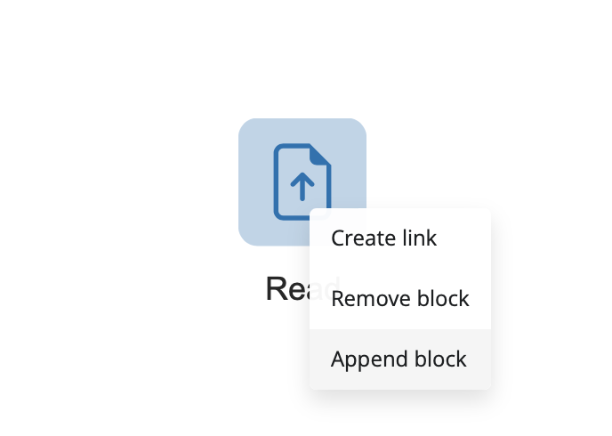
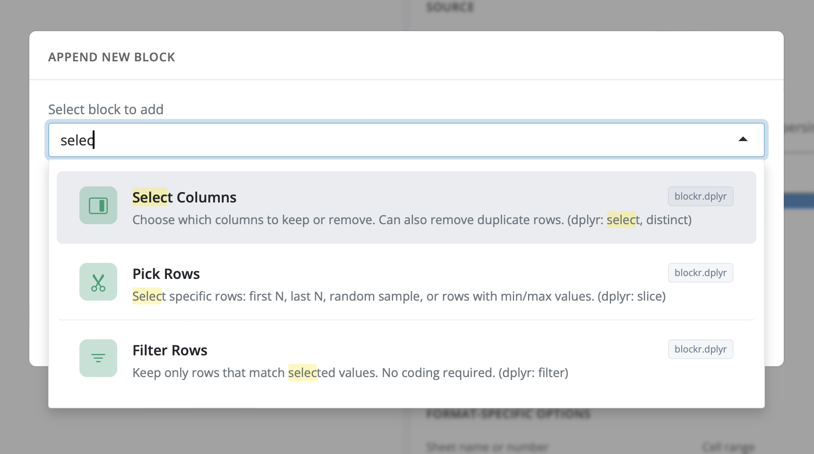
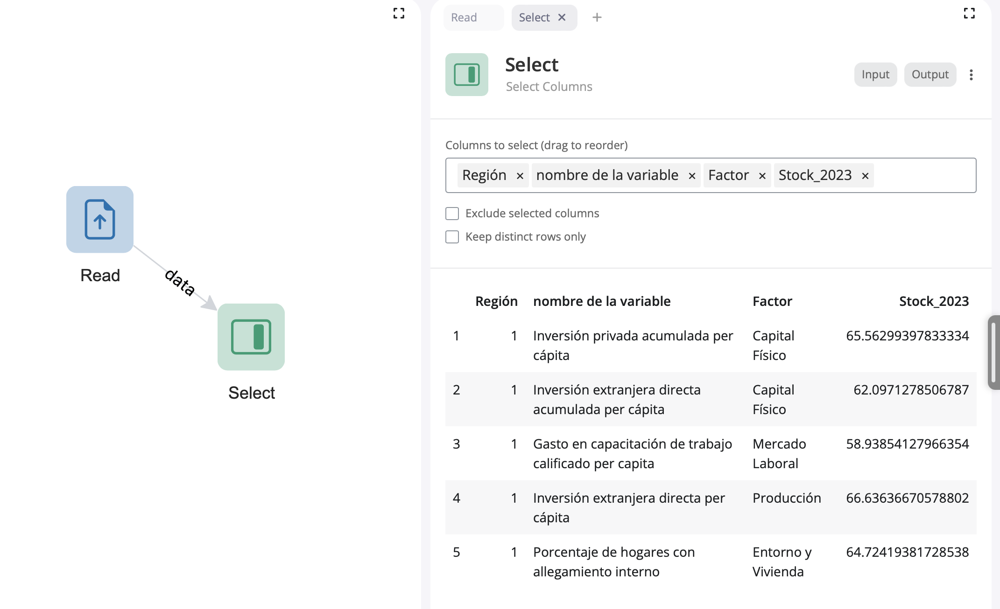
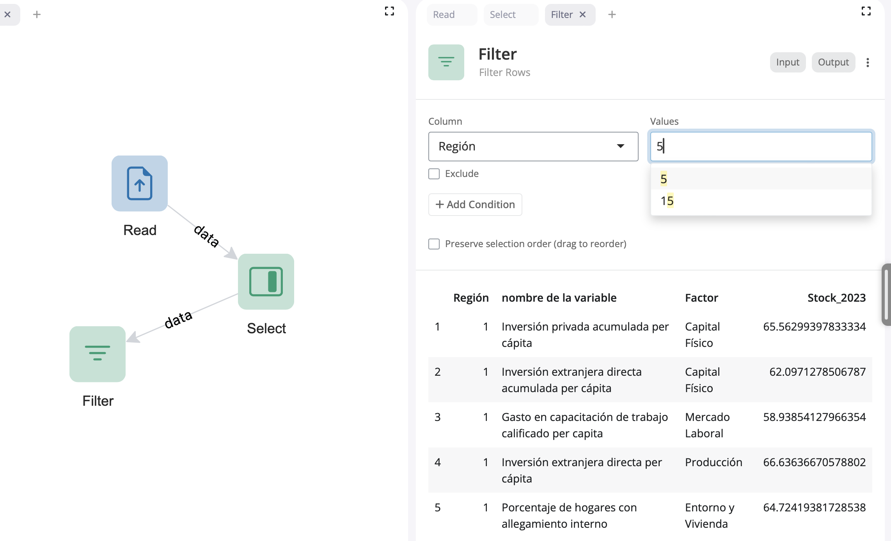
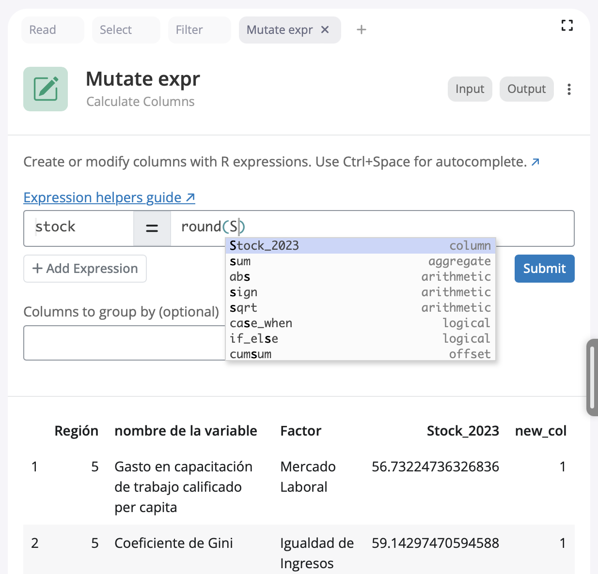
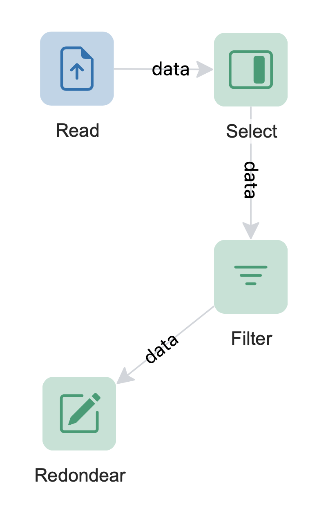
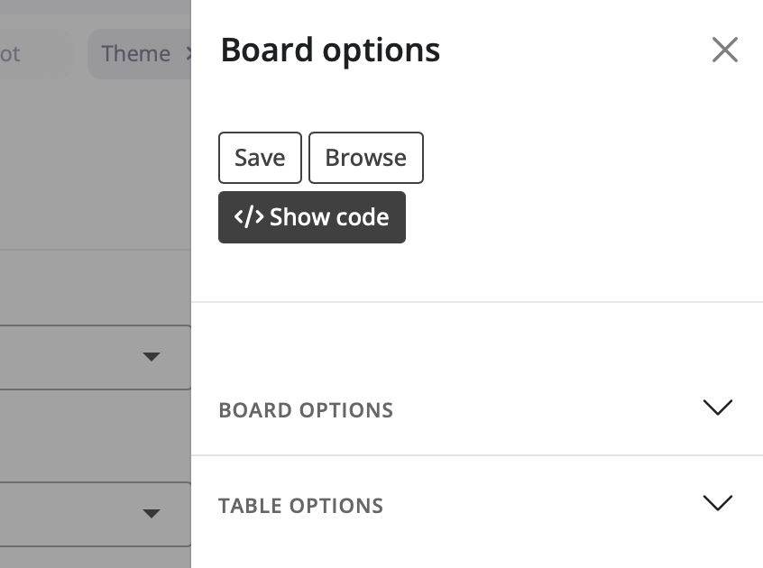
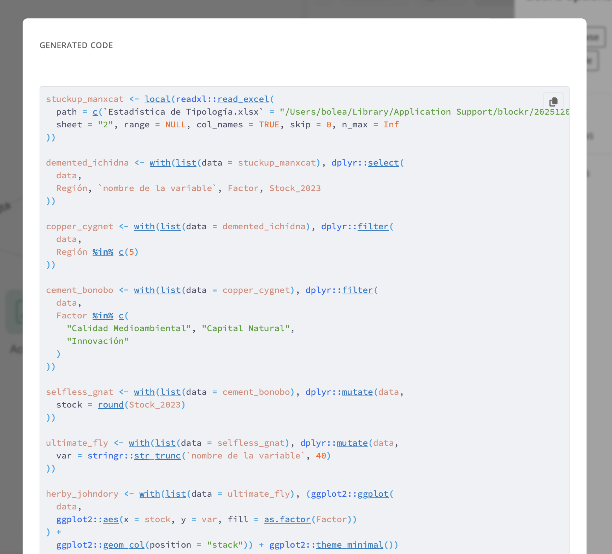

Procesa datos con R sin programar y de forma interactiva
5/12/2025
Viendo el streaming de la
conferencia LatinR 2025 conocí el
paquete de R {blockr}, que nos ofrece una interfaz gráfica interactiva para usar R sin escribir código.
Como su nombre lo indica, funciona por medio de bloques que se conectan entre sí, representando de forma visual el flujo de procesamiento de datos.
Esta herramienta puede servirle a gente que esté aprendiendo R y quizás les sirva empezar por lo práctico antes de entrar al código. También puede ser útil para personas que les cueste programar en R, o que tengan alguna dificultad para escribir código, o bien, para quienes quieran esbozar un proceso antes de escribirlo.
Empezar
Para empezar a usarlo, primero hay que instalar el paquete. Se requiere tener el paquete {pak} instalado, y luego usarlo para instalar {blockr}:
# install.packages("pak")
pak::pak("BristolMyersSquibb/blockr")
Una vez instalado, lo cargamos y ejecutamos la interfaz gráfica:
library(blockr)
run_app()

La interfaz empieza como un lienzo vacío, al cual hay que agregar bloques.
Les voy a mostrar un ejemplo sencillo, pero recomiendo seguir las instrucciones oficiales, que son bien completas.
Al agregar un bloque, se nos abre un panel donde escribimos lo que necesitamos:

Cargar datos
Para partir, agregamos un bloque de carga de datos. Podemos cargar datos desde un archivo local, importarlos a {blockr} para que el paquete los guarde, o bien usar datos de ejemplo.
Al elegir el bloque, éste aparece en el lienzo, y en el panel derecho aparecen las opciones, que son equivalentes a los argumentos de las funciones en R:

Pero además tiene otros beneficios: por ejemplo, el bloque de carga de datos detecta automáticamente el tipo de datos que vamos a cargar, simplificando un poco el proceso de tener que encontrar un paquete y una función específicas.
Una vez que tenemos un bloque, le agregamos (append) una conexión a un nuevo bloque:
Manipular datos
Vamos a hacer una selección de columnas para acotar el conjunto de datos:
El bloque de la acción nueva aparece conectado a los datos, y en el panel derecho elegimos las columans y vamos previsualizando los datos en tiempo real:
Luego podemos agregar un filtro, para elegir las filas de la tabla. La interfaz va sugiriendo variables y columnas en todo momento:
Crear y transformar columnas
Ahora vamos a transformar algunas columnas:
Al transformar columnas, nos encontramos con una interfaz parecida a la de mutate(), donde vamos definiendo nuevas columnas a partir de las existentes. Pero en este punto ya es necesario ir aplicando un poquito de código. En este caso, redondeamos los valores de una columna.
Así va quedando nuestro flujo hasta ahora:
Ahora vamos a guardar el tablero que hemos ido trabajando. Para guardar se aprieta la barra negra que está al costado derecho de la aplicación y aparece una barra lateral con opciones para guardar y cargar (browse) tableros:

Visualizar datos
Para ir finalizando,
crearemos un gráfico con {blockr} basado en {ggplot2}. Para ello, agregamos un bloque de gráfico:

Nos encontramos con un panel donde podemos elegir el tipo de gráfico que queremos, y seleccionamos las columnas que vamos a aplicar a cada aspecto del gráfico. En este sentido se parece un poco a
{esquisse}, paquete para hacer gráficos de forma interactiva.
Obtenemos un gráfico básico, que acá podemos ver junto al flujo de procesamiento de datos que lo genera. Es interesante poder ir agregando bloques para obtener caminos separados en el flujo, que luego puedes reordenar o reconectar entre sí.
Exportar código
Finalmente, podemos exportar el código R que genera todo el flujo de procesamiento de datos y gráficos que hemos creado. Esto es súper útil, porque nos permite aprender a programar en R viendo el código que genera cada bloque, y luego obtener el código para continuar o mejorar el análisis fuera de {blockr}.
Entramos al panel lateral y elegimos show code:
Se abre una ventana con el código R completo que genera todo el flujo de procesamiento de datos y gráficos que hemos creado:
Me parece una alternativa bien interesante para usar R! Tiene harto potencial para aprender, explorar, y enseñar de una manera más liviana e interactiva, con miras a luego profundizar usando el lenguaje.
Video
Mira el video de la presentación en LatinR para saber más: